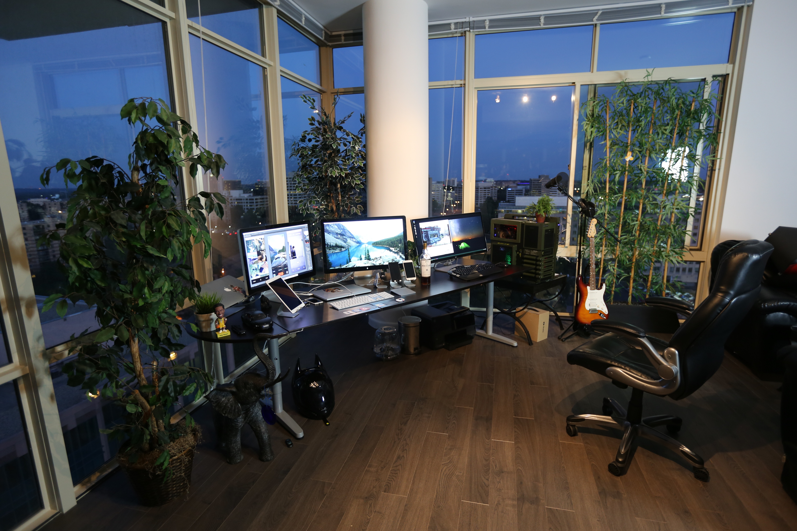

Coding Skills
The ability to learn concepts and apply them to other problems
Passion for problem solving
Good communication skills
Good writing skills
Confidence around a computer
Resourcefulness
An inquisitive mind
Kenneth Famarin
Content Producer & Graphics Designer
Message
I AM KENNETH M. FAMARIN, SECOND YEAR BSIT STUDENT. MOST OF ALL I'M A LAZY PERSON WHEN I GET TIRED OF SOMETHING I WILL NOT DO IT ALSO I GIVE THEM A REMINDER THAT I'M NOT GOING TO DO IT IF THE TASK IS IMPORTANT I WILL TAKE CONSIDERATION SOMETIMES.
MY PERSONALITY IS LIKE A ALL ROUNDER SOMETIMES I'M SHY OR ACTIVE TO BE SOCIABLE, AND PEOPLE MISUNDERSTAND IT ALOT LIKE I SAID I DO THINGS THAT I LIKE IF NOT YOU KNOW THE ANSWER, ALSO RESPONSIBILITY AND REQUIREMENTS IS ANOTHER THING.